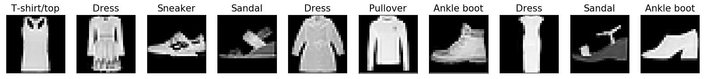

First steps in PyTorch: classifying fashion objects (FashionMNIST)
PyTorch tutorial, FashionMNIST
Deep learning lectures © 2018 by Jeremy Fix is licensed under CC BY-NC-SA 4.0


Objectives
In this practical, we will make our first steps with PyTorch and train our first models for classifying the Fashion MNIST dataset from Zalando, which is made of:
- \(60000\) \(28\times28\) grayscale images in the training set
- \(10000\) \(28\times28\) grayscale images in the test set
- belonging to 10 classes (T-shirt, Trouser, Pullover, Dress, Coat, Sandal, Shirt, Sneaker, Bag, Ankle boot)
Some samples of the dataset are represented below:

It should be noted that this dataset was created to replace the traditional MNIST dataset, which is by far too easy now (a simple CNN can reach a test accuracy higher than \(99.5\%\)). We may have used MNIST for this introductory practical, but well … let us have fun with fashion, why not?!
As you enter the universe of PyTorch, you might be interested in looking at dedicated PyTorch tutorials.
The models you will train are:
- a linear classifier (logistic regression)
- a fully connected neural network with two hidden layers
- a vanilla convolutional neural network (i.e. a LeNet-like convnet)
- some fancier architectures (e.g. ConvNets without fully connected layers)
As we progress within this tutorial, you will also see some syntactic elements of PyTorch to:
- load the datasets,
- define the architecture, loss, and optimizer,
- save/load a model and evaluate its performance,
- monitor the training progress by interfacing with a dedicated web server.
VERY IMPORTANT: You are provided with a code base. We will walk through the code together. You should not read all the files before starting to code. However, when we discuss coding in a function, you should also take the time to consider the surrounding code: where is that function called, what are the arguments of the function, and how it fits into the overall design.
The modular code base proposed in this lab comes from https://github.com/jeremyfix/pytorch_template_code.
It is, I consider, a reasonable starting point for experimenting with PyTorch. It features modularity and minimal guarantees of reproducibility. This is obviously highly customizable; feel free to adapt it for your own work. You may even consider contributing to that code base by sending pull requests, raising issues, etc. It is open source released under GPL 3 :)
Setup and predefined scripts
For this lab, you are provided a base code to complete: fashionmnit-kit.tar.gz. To get and use that code:
wget https://jeremyfix.github.io/deeplearning-lectures/assets/introlab-kit.tar.gz
tar -zxvf introlab-kit.tar.gzThis code is organized as a Python library introlab to be installed and used out of source. It contains all the required modules for running your experiments. If you want to add a feature, you need to modify that library.
To install the library, you should 1) create a virtual environment and 2) install it in developer mode.
If you use the DCE of CentraleSupélec, you can use pre-installed virtual environments that already ship several required packages:
/opt/dce/dce_venv.sh /mounts/datasets/venvs/torch-2.7.1 $TMPDIR/venv
source $TMPDIR/venv/bin/activateOtherwise, you need to create your own venv, for example using the built-in Python venv module:
python3 -m venv /tmp/venv
source /tmp/venv/bin/activateThen, to install the library in developer mode:
python -m pip install -e introlabYou can verify that the library is installed by running:
python -c "import introlab; print(f'Library available at {introlab.__file__}')"This basic code base offers you several modules that we will cover step by step:
- data.py: deals with data loading,
- models: submodule containing our neural networks,
- utils.py: contains several utility functions such as the training and test loops, saving the best models, etc.
- main.py: the main script which will run training and testing.
Data loading in the data submodule
Minimal test definition
Our objective, in this part on data, is to offer a function get_dataloaders that returns the dataloaders for training and validation, the dimensionality of the input and target, as well as some other useful information such as the class names. That is the contract. To ensure that this contract is fulfilled, we define a minimal test function.
In the data.py script, write the following test:
def test_dataloaders():
data_config = {
"root_dir": "./data",
"valid_ratio": 0.2,
"batch_size": 32,
"num_workers": 0,
}
use_cuda = torch.cuda.is_available()
train_loader, valid_loader, input_size, num_classes, classes = get_dataloaders(
data_config, use_cuda
)
X, y = next(iter(train_loader))
grid = make_grid(X, nrow=8)
show(grid)
plt.tight_layout()
plt.savefig("fashionMNIST_grid.png", bbox_inches='tight')What do you expect from this function?
We want this local test to be called when invoking python -m introlab.data. For this to happen, we need the following lines at the end of the data.py script:
if __name__ == "__main__":
logging.basicConfig(level=logging.INFO)
test_dataloaders()Now, in the next sections, we explain how to write the get_dataloaders function. Any time you want to test it, you just need to run the data submodule: python -m introlab.data.
Construction of the datasets for training and validation
In the data.py submodule, the function get_dataloaders has to build and return the dataloaders for training and validation as well as some additional information. To do so, we first need a dataset.
Complete the construction of the dataset:
# vvvvvvvvvvvvvvvvvvvvvvvvvvvvvvvvvvvvvvvvvvvvvvvvvvvvvvvvv
# TODO: Create the FashionMNIST dataset
# The variable rootdir is useful
base_dataset = None
# ^^^^^^^^^^^^^^^^^^^^^^^^^^^^^^^^^^^^^^^^^^^^^^^^^^^^^^^^^so that base_dataset is an instance of the torchvision.datasets.FashionMNIST dataset. Pay attention to the beginning of the function; some variables might be useful, such as root_dir.
Once done, we proceed by splitting the dataset into two folds: one for validation, a fraction valid_ratio of the total number of samples, and one for training.
Build the two folds for training and validation. For this, you need to complete the code below. PyTorch offers the torch.utils.data.Subset dataset class.
# vvvvvvvvvvvvvvvvvvvvvvvvvvvvvvvvvvvvvvvvvvvvvvvvvvvvvvvvvvvvvvvvvvvvv
# TODO : Create the train and valid splits. The torch.utils.data.Subset
# class is useful for this purpose
train_dataset = None
valid_dataset = None
# ^^^^^^^^^^^^^^^^^^^^^^^^^^^^^^^^^^^^^^^^^^^^^^^^^^^^^^^^^^^^^^^^^^^^^Just after building the splits, some transforms are declared in the code. We do not detail that part of the code for now. We will come back to that section once we discuss augmentation transforms. Still, you may take a minute or two to understand this simple pipeline, which reduces to:
preprocess_transforms = [
v2.ToImage(),
v2.ToDtype(torch.float32, scale=True),
]
train_transforms = v2.Compose(preprocess_transforms)
train_dataset = WrappedDataset(train_dataset, train_transforms)
valid_transforms = v2.Compose(preprocess_transforms)
valid_dataset = WrappedDataset(valid_dataset, valid_transforms)ToImage transforms the PIL image into a torchvision image tensor with shape (C, H, W), converts the int8 values to floating-point values, and scales \([0, 255]\) to \([0.0, 1.0]\).
The use of WrappedDataset is to keep a degree of freedom to apply different transform pipelines for the training and validation folds, e.g. the augmentations.
The dataloaders
We are almost done. Now that we have our dataset objects, it is straightforward to construct dataloaders using the torch.utils.data.DataLoader functions.
Proceed by completing the construction of the dataloaders:
# vvvvvvvvvvvvvvvvvvvvvvvvvvvvvvvvvvvvvvvvvvvvv
# TODO: Create the train and valid dataloaders
# from their respective datasets
train_loader = None
valid_loader = None
# ^^^^^^^^^^^^^^^^^^^^^^^^^^^^^^^^^^^^^^^^^^^^^Running the test
If you correctly filled in the functions in the previous sections, you should be able to run the minimal test with the command:
python -m introlab.datawhich is expected to produce an image with some samples of the FashionMNIST dataset in fashionMNIST_grid.png, as below.
{kind=link}
If you notice weird pixels, like oversaturated ones, you should probably consider temporarily removing the normalization of the pixels. This normalization brings your pixels from \([0.0, 1.0]\) to \([-1.0, 1.0]\), which Matplotlib clips to \([0.0, 1.0]\), hence the loss of information.
Definition of a neural network in the models submodule
Now that we have our data, we need to design a predictor. The predictors will be built in the models submodule. This submodule is our library of models. The contract for this submodule is to offer an instance of the nn.Module class, whether it is a convolutional neural network, a transformer, a linear model, a capsule net, etc.
The interface with the models submodule is through the build_model function defined in the models/__init__.py script.
def build_model(cfg, input_size, num_classes):
return eval(f"{cfg['class']}(cfg, input_size, num_classes)")In the next subsection, we will see which parameters are passed, in particular the cfg dictionary. This is actually the key to allowing the creation of models with different numbers and types of arguments in their constructor.
A model, in the PyTorch sense, is an instance of torch.nn.Module. This class is the mother class of all the models in PyTorch. The forward propagation of the model is to be implemented in the forward method, and PyTorch will wrap that method in the __call__ method so that a model can be conveniently called on some inputs, y = model(x).
There are mainly three approaches to define a model:
- you directly instantiate a PyTorch model, for example a torch.nn.Linear for a linear model, torch.nn.Transformer for a transformer, etc.,
- you stack layers in a sequential container torch.nn.Sequential,
- you define your own class inheriting from the
torch.nn.Moduleclass and implement theforwardmethod.
Minimal test definition
As for the data, we start by defining a minimal test that we expect to work. That is again a contract. Since we have a submodule, we will implement this test in the models/__main__.py script. An example of such a test, in the case of a linear model, would be:
def test_linear():
cfg = {"class": "Linear"}
input_size = (3, 128, 128)
batch_size = 16
num_classes = 18
model = build_model(cfg, input_size, num_classes)
input_tensor = torch.randn(batch_size, *input_size)
output = model(input_tensor)
# vvvvvvvvvvvvvvvvvvvvvvvvvvvvvvvvvvvvvvvvvvvvvv
# TODO
# Fill in the expected output size
expected_output_size = None
# ^^^^^^^^^^^^^^^^^^^^^^^^^^^^^^^^^^^^^^^^^^^^^^
expected_output_size = (batch_size, num_classes) # @SOL@
assert expected_output_size == output.shape
print(f"Output tensor of size : {output.shape}")
if __name__ == "__main__":
logging.basicConfig(level=logging.INFO)
test_linear()This basic test is simply calling the model-building function, forward-propagating a dummy tensor through it, and checking that the output shape is of the expected dimensions. Notice the cfg dictionary that is provided to build_model. Remember, build_model is defined as:
def build_model(cfg, input_size, num_classes):
return eval(f"{cfg['class']}(cfg, input_size, num_classes)")Given the dictionary cfg of the test_linear function, the string in the eval call is evaluated as "Linear(cfg, input_size, num_classes)", and then Python interprets that string by calling the right constructor. This is the Python magic that avoids writing the long alternative, although equivalent:
def build_model(cfg, input_size, num_classes):
if cfg['class'] == "Linear":
return Linear(cfg, input_size, num_classes)
elif cfg['class'] == ...
...Running the test is done by invoking:
python -m introlab.modelsA linear neural network
Complete the Linear function of models/base_models.py so that it returns a linear model. You will have to use the layers torch.nn.Linear and torch.nn.Flatten, stacked in a torch.nn.Sequential.
Why the flatten layer? Because the input that will feed the network is of shape (B, C, H, W), and the linear layer must operate on tensors of shape (B, C \times H \times W).
Complete the minimal test with the missing expected_output_size and check that the test is running successfully.
How many trainable parameters does that model possess?
We are constructing classification networks. It is expected to output class probabilities. Still, you never add the output transfer function. Why? Because the implementation of CrossEntropyLoss in PyTorch that we will use combines the softmax and the negative log-likelihood, which is more numerically stable than applying both operations independently.
A fully connected feedforward neural network
Now, your job is to implement a second model: a fully connected multi-layer feedforward neural network.
Define a minimal test in the models/__main__.py script to test this implementation and complete the FFN function in models/base_models.py. It receives \(3\) arguments:
num_layers: the number of layers to stack,num_hidden: the number of units in each layer,use_dropout: whether or not to inject dropout between the layers, a parameter we will use later in the lab.
How many trainable parameters does that model possess?
The main script main.py
Alright, we have our dataloaders providing minibatches of inputs/outputs as well as two predictors to train. It is now time to move on to the training script, which is defined in the main.py script.
The main.py script is constructed with:
def train(config):
...
if __name__ == "__main__":
logging.basicConfig(stream=sys.stdout, level=logging.INFO, format="%(message)s")
if len(sys.argv) != 3:
logging.error(f"Usage : {sys.argv[0]} <train|test> config.yaml")
sys.exit(-1)
command = sys.argv[1]
logging.info("Loading {}".format(sys.argv[1]))
config = yaml.safe_load(open(sys.argv[2], "r"))
eval(f"{command}(config)")So that we can call it:
python -m introlab.main train config.yamlWe will come back to the content of the config.yaml file when we run our first trainings.
An overview of the train function:
- loads the data and builds the dataloaders,
- defines the model,
- defines the loss function and optimizer,
- defines the callbacks such as checkpointing the best model and logging, etc.,
- loops over the minibatches and performs the updates of the model’s parameters.
In the next sections, you will complete the missing elements of this script.
Loss function and optimizer
The definition of the loss function and optimizer are in the main.py script. For the loss function, I suggest you implement a cross-entropy loss.
Let us remind ourselves what the cross-entropy loss is in PyTorch. In PyTorch, it is a combination of a softmax and the negative log-likelihood. Both are combined because the combination benefits from numerical stability tricks (log-sum-exp). Consider the Python snippet below:
import torch
import torch.nn as nn
# On définit un modèle linéaire
logits = torch.Tensor([[-100., 10., 0.],[10., 15., 3.14]])
targets = torch.Tensor([1, 2]).long()
# On définit la perte cross-entropique
loss = nn.CrossEntropyLoss()
# On calcule la perte
output = loss(logits, targets)
print(f"Loss value :{output.item()}")In this code, we have two vectors of logits \([-100, 10, 0]\) and \([10, 15, 3.14]\) as well as the targets \([1, 2]\). It means the logits of the classes to predict are \(10\) for the first sample and \(3.14\) for the second sample. So, the computation performed is :
\[ 5.93... = \frac{1}{2} (-\log(\frac{e^{10}}{e^{-100}+e^{10} + e^{0}}) -\log(\frac{e^{3.14}}{e^{10}+e^{15} + e^{3.14}})) \]
The logits are tensors of shape \((B, K)\), where \(B\) is the batch size and \(K\) the number of classes, and the tensor of targets is of shape \((B,)\), providing the class to be predicted for every sample.
Complete the definition of the loss function and optimizer in the main.py script. The loss function is torch.nn.CrossEntropyLoss, as discussed above. For the optimizer, choose among the optimizers implemented in PyTorch.
# Build the loss
logging.info("= Loss")
# vvvvvvvvvvvvvvvvvvvvvvvvvvvvvvvvv
# TODO : Define the loss function
loss = None
# ^^^^^^^^^^^^^^^^^^^^^^^^^^^^^^^^^
# vvvvvvvvvvvvvvvvvvvvvvvvvvvvvvvvvvvvvv
# TODO : Define the optimizer
optimizer = None
# ^^^^^^^^^^^^^^^^^^^^^^^^^^^^^^^^^Training and inference loops in the utils submodule
We can proceed implementing the training and inference loops.
Training loop
The training loop is implemented in the main.py script. Its overall structure is:
for e in range(config["epochs"]):
# Training on the training split for 1 full epoch
...
# Testing on the validation split
...
# Checkpointing the model if improved
...
# Logging the metrics
...The training over one epoch is defined in the utils.py script.
Read, decipher, understand the train_one_epoch function in the utils.py script.
Test loop
The inference function test is defined in the utils.py script. Its role is to evaluate the predictions of a model. In this function there is no parameter update. There is also one major difference:
- during training, the model is switched to train mode:
model.train()- during inference, the model is switched to test mode:
model.eval()That one line is super important. Some layers indeed perform different computations depending on whether they are applied during training or testing, such as dropout layers and batch normalization.
Read, decipher, understand the test function in the utils.py script.
Checkpointing the best model
The best model is the one minimizing our estimate of the real risk. There is no reason to assume that the best model is the one obtained asymptotically at the end of the optimization process. The optimization process seeks to minimize the empirical risk on the training fold, not the real risk.
The real risk is evaluated on the validation fold with the test function. That function outputs the test_loss that is used to decide if an improvement has been achieved after an epoch of training :
test_loss = utils.test(model, valid_loader, loss, device)The checkpointing is already implemented as the ModelCheckpoint class in the utils.py submodule. It is created and called in the main.py script:
# Define the early stopping callback
model_checkpoint = utils.ModelCheckpoint(
model, str(logdir / "best_model.pt"), min_is_best=True
)
...
# During training
for e in range(config["epochs"]):
...
updated = model_checkpoint.update(test_loss)Read, decipher, understand the train_one_epoch function in the utils.py script.
Our first trainings
Running a training
All the elements are in place to start a first training on the FashionMNIST dataset. For this, we need to submit a YAML script config.yaml to the introlab main script. As an example, the script below will configure a training of a Linear model for \(20\) epochs with a batch size of \(32\), with \(20\%\) of the data used for validation.
data:
root_dir: './data'
batch_size: 32
num_workers: 4
valid_ratio: 0.2
normalize: False
nepochs: 20
logging:
logdir: "./logs"
model:
class: LinearIf you save this file as config.yaml, you can then proceed to run a training:
python -m introlab train config.yamlRun several trainings of the models you implemented, such as Linear and FFN.
Notice that a dedicated logging directory (a subdirectory of ./logs) is created every time you run a new training. That logging directory is expected to gather all the assets of one experiment. For now, it contains a copy of the config file, a textual summary of the experiment, and the TensorBoard log file we will visualize in the next section.
Visualization of the results with TensorBoard
The training script contains functions to record logs during training. In particular, in the main.py script, you will notice:
# On the tensorboard
for key, value in metrics.items():
tensorboard_writer.add_scalar(key, value, e)When you run a training, a specific file called events.out.tfevents.xxxxx is created and the information saved by the tensorboard_writer is written to this file. This file contains all the TensorBoard logs of your run. With TensorBoard, you can save images, audio, scalars, histograms, graphs, etc.
In order to visualize the logs, you just need to start the TensorBoard web client and connect to it with a browser at http://localhost:6006.
$ tensorboard --logdir logs
Serving TensorBoard on localhost; to expose to the network, use a proxy or pass --bind_all
TensorBoard 2.21.0 at http://localhost:6006/ (Press CTRL+C to quit){kind=link}
The impact of normalization
The preprocessing of the data is defined in the data.py submodule. For now, it is defined as:
preprocess_transforms = [
v2.ToImage(),
v2.ToDtype(torch.float32, scale=True),
]When loading an image, the pipeline is the following:
- an image is loaded from disk as a PIL (Pillow) image, with unsigned integer data types for the pixels with discrete values in \([0, 255]\);
- the v2.ToImage converts the PIL image to a PyTorch image
tv_tensor, with values still in the range \([0, 255]\); - the v2.ToDtype converts from
uint8tofloat32and scales the values by \(255\) (scale=True).
After these transforms, you end up with a tensor with floating-point values in \([0.0, 1.0]\). Now, we know from the 2010 revolution in deep learning that initialization is critical for the functioning of the training, and the input pixel distribution is part of the reasoning (“let us assume pixel values are normally distributed, then …”).
I propose that you check the influence of normalization on the performance of your training.
Normalize your images with a mean pixel value at \(\mu=0.2860\) and a standard deviation \(\sigma=0.2750\). To do so, you can add a v2.Normalize call in the preprocess_transforms.
You can benefit from the normalize argument in the config file to parametrize your transformations.
Regularizations
Regularization is about all the techniques used to mitigate overfitting. We can cite:
- L1 and L2 regularization, where we add a penalty term to the loss,
- dropout layers, which are added inside the architecture of the neural network,
- data augmentation, which consists of randomly changing your inputs with predictable consequences on the targets.
L2 regularization
Let us consider the simplest approach to introducing L2 regularization (although, as discussed in the lecture, we saw a much more flexible way to define it). Some optimization algorithms, such as SGD or AdamW, implement L2 regularization. This is called weight_decay and corresponds to the factor multiplying the L2 norm of the parameters.
Modify your definition of the optimizer in the main.py script to use AdamW with a weight_decay of \(1e-4\).
Experiment with this regularization on your models. For example, you can check its influence on a multi-layer feedforward neural network with \(5\) hidden layers and \(128\) neurons per layer.
Dropout
Inserting dropout layers is another way to regularize your models. As a reminder, dropout layers are layers that, during training, zero out randomly a fraction of the activations. In general, we introduce these layers after every linear layer, but these are also the ones that may massively overfit.
Modify your implementation of the multi-layer feedforward neural network FFN to introduce torch.nn.Dropout layers if requested. The variable use_dropout can be used to decide whether or not to introduce dropout layers.
Experiment with this regularization.
Dropout layers behave differently in training or inference. During evaluation, an approximate average response of the neural network is computed rather than zeroing activations. It is therefore important, for the correct functioning of these layers, not to forget the model.train() and model.eval() calls in the training and inference loops.
If you dig into the PyTorch implementation, you will notice it does not implement the original dropout but a variant called “inverted dropout”, which does not require sorting the dropout probability for inference.
Data augmentation
The final category of regularization techniques we will consider is data augmentation. Data augmentation consists of transforms of your inputs for which you can predict the impact on the target. For this, you can use dedicated libraries such as albumentations, but here we will stick to the PyTorch ecosystem with the torchvision v2 transforms.
For a problem such as classifying fashion items, we can consider transforms that leave the class invariant, such as:
- rotations,
- translations,
- symmetries,
- zoom,
- luminosity and contrast alterations.
These augmentations are performed on the fly; there is no need to precompute a transformed dataset. The data augmentation transforms are added in the data pipeline, hence in the data.py submodule. For now, you only have:
preprocess_transforms = [
v2.ToImage(),
v2.ToDtype(torch.float32, scale=True)
]
if normalize:
preprocess_transforms.append(v2.Normalize(mean=[0.2860], std=[0.2750]))
augmentation_transforms = [
]
train_transforms = v2.Compose(preprocess_transforms + augmentation_transforms)
train_dataset = WrappedDataset(train_dataset, train_transforms)The augmentation_transforms is expected to host the augmentation transforms.
Add transforms in the augmentation_transforms list. Several possibilities can be considered; see the documentation.
You may also want to try augmentation policies such as AutoAugment or RandAugment; see Auto-Augmentation.
Experiment with training using data augmentation. For your experiments, you need a model with sufficient capacity to overfit; otherwise, you will not see the impact of data augmentation. For example, a multi-layer feedforward network with \(5\) hidden layers of size \(128\).
I advise you to calibrate your augmentation pipeline by writing a function in data.py that will display augmented samples. That is a very first approach to defining this pipeline. At the end of the day, it is your real risk that will guide you toward the appropriate augmentations.
{kind=link}
Convolutional neural networks
Small kernels and global average pooling
Finally, we are going to implement a convolutional neural network. For that, you need to complete the implementation of the FancyCNN class in the models/cnn_models.py submodule. We will then experiment by writing a class deriving from the torch.nn.Module class:
import torch.nn as nn
class FancyCNN(nn.Module):
def __init__(self, cfg, input_size, num_classes):
super().__init__()
layers = []
cin = input_size[0]
def forward(self, x):
# vvvvvvvvvvvvvvvvvvvvvvvvvvvvvvv
# TODO: Implement the forward pass
return x
# ^^^^^^^^^^^^^^^^^^^^^^^^^^^^^^You are requested to implement a model with \(N\) blocks, each being the repetition of \(2\) sub-blocks composed of:
- a convolutional layer with a kernel size \(3\times 3\), a zero-padding of \(1\), and a stride of \(1\),
- a ReLU activation function,
- a BatchNormalization layer.
The conv_relu_bn function can be useful for this part.
After every \(2\) sub-blocks, we add a downsampling sub-block composed of:
- a convolutional layer with a kernel size \(2\times 2\), stride \(2\), padding \(0\),
- a ReLU activation,
- a BatchNormalization layer.
The conv_down function can be useful for this part.
For every block, we progressively increase the number of output channels, for example \(16\), \(32\), \(64\), \(128\), …
After the \(N\) blocks, we add a global average pooling layer, a flatten layer, and finally a linear layer for the classification.
Implement and experiment the FancyCNN model. What do you notice about the performances and the relative number of trainable parameters ?
You should end up with a model reaching around \(93\%\) of test accuracy and a test cross-entropy loss around \(0.20\) with a FancyCNN of \(570K\) parameters, RandomHorizontalFlip and RandomRotation($-10$ deg, $10$ deg), trained for \(20\) epochs. The training accuracy reached \(95\%\), with a loss of \(0.14\). See the summary.txt file.
A possible solution
You will find a possible solution at introlab-sol.tar.gz
Bonus
The right metrics
It is important to choose the right metrics to evaluate the performance of your models. FashionMNIST is a balanced dataset so that the accuracy is ok. However, if you were to work with Caltech101, it’s an unbalanced dataset : out of the \(9145\) images belonging to \(101\) classes, \(800\) images of planes and \(40\) images of Ephemeroptera (mayfly). A model always predicting the majority class would have an accuracy of almost \(10\%\). If the dataset were balanced, this naive predictor would not score higher than \(1\%\). In such cases, it would be better to consider metrics such as the F1 or the AUC and also to check the confusion matrix to investigate the classes for which the model is misled.
How to scale the fully connected layers without global average pooling?
When you design a convolutional neural network, there are two stages: the convolutional stage and the fully connected stage. The parameters provided to the convolutional stage are independent of the input size \((H, W)\) of your image; they depend only on its depth. However, when you enter the fully connected layers, and because these layers are fully connected, the construction of their weight matrix requires knowledge of the full dimensions of their input.
Therefore, you need to compute how the input shape \((C, H, W)\) gets modified by propagation through the convolutional stage. Sometimes, there is a shortcut. Indeed, with the global average pooling in the convolutional network we designed in the lab, we do not need to perform complicated math; the output shape is always \((C_1, 1, 1)\), and \(C_1\) is given by the number of kernels of the last convolutional layer. In other cases, it is more complicated.
Fortunately, we can be lazy and defer to PyTorch the computation of these dimensions. We just need to forward-propagate a dummy tensor through the convolutional part and measure its output shape. Let us see this in action:
def MySuperRevolutionnaryModel(cfg, input_size, num_classes):
layers = []
cin = input_size[0]
cout = 16
for i in range(cfg["num_layers"]):
layers.extend(conv_relu_bn(cin, cout))
layers.extend(conv_relu_bn(cout, cout))
layers.extend(conv_down(cout, 2 * cout))
cin = 2 * cout
cout = 2 * cout
conv_model = nn.Sequential(*layers)
# Compute the output size of the convolutional part
probing_tensor = torch.zeros((1,) + input_size)
out_cnn = conv_model(probing_tensor) # B, K, H, W
num_features = reduce(operator.mul, out_cnn.shape[1:], 1)There, the probing_tensor is just a dummy tensor appropriately shaped to the input_size that is propagated through the convolutional stage. Then, we extract the shape of out_cnn. This shape could then be used to build the next fully connected layers for example.